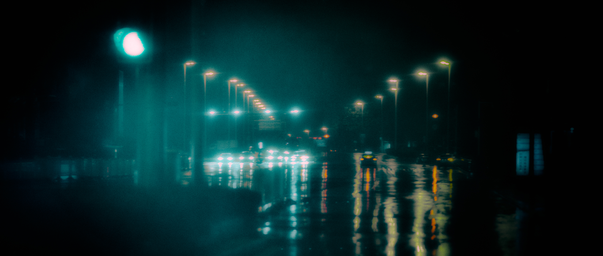

I met the first ghost in front of my house. He told me it was Hyakki Night, the night of ghosts, and
I would meet more of them that night. I didn't believe him at first, but then I found he was right.
I saw the Hyakki night that night. Most ghosts were moving really fast, the lights in their hands
flashed by my eyes, and made me felt dizzy.
One of the ghosts was quite strange, he moved really slowly. He said all ghosts have only one goal: to make up for the things that they regret while they lived. I was curious why don't they just make them up while they are still alive. He didn't answer me, after a while, he said we could only recognize those regrets after we die.
Nothing is crazy if you are in love, she said. When she said that, she was kind of crazy. I gave her a cigarette and asked her does she regret what she's done, she answered me she doesn't smoke, but she took that cigarette and left me in a hurry.
I like drinking water since she left me. But I'm not going to find her. I want to see if I'm going to regret that or not after I die, after I become a ghost. I didn't see the moonlight that night. I used to think the moon eclipsed with a pattern, then I found that's not true. The moon changes with its mood. I didn't want to walk anymore so I went back home.
Overview
One of the ghosts was quite strange, he moved really slowly. He said all ghosts have only one goal: to make up for the things that they regret while they lived. I was curious why don't they just make them up while they are still alive. He didn't answer me, after a while, he said we could only recognize those regrets after we die.
Nothing is crazy if you are in love, she said. When she said that, she was kind of crazy. I gave her a cigarette and asked her does she regret what she's done, she answered me she doesn't smoke, but she took that cigarette and left me in a hurry.
I like drinking water since she left me. But I'm not going to find her. I want to see if I'm going to regret that or not after I die, after I become a ghost. I didn't see the moonlight that night. I used to think the moon eclipsed with a pattern, then I found that's not true. The moon changes with its mood. I didn't want to walk anymore so I went back home.